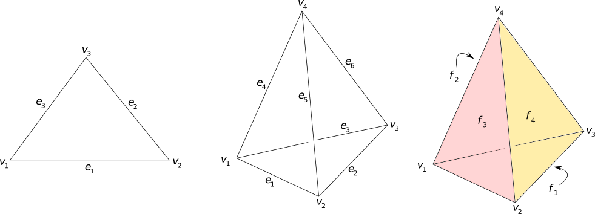

All the MaxFEM applications, except Eddy currents 3D, accept two formats for a finite element mesh: MFM and UNV.
The MFM format is a simplification of the NOPO format used in Modulef (in fact, MFM means "Modulef formatted mesh"). MFM is also the filename extension for the files written in MFM format.
This format has strict rules to describe nodes, elements and references of a mesh. The file must be written in ASCII and be composed of the following records:
nel: total number of elements,
nnod: total number of nodes,
nver: total number of vertices,
dim: space dimension,
lnn: local number of nodes per element,
lnv: local number of vertices per element,
lne: local number of edges per element and
lnf: local number of faces per element.
Note that, since lnn, lnv,... are constants, this format does not support an hybrid mesh.
A second record containing the matrices nn, mm, nra, nrc, nrv and z written by column, with their elements separated by commas. If nnod ≠ nver, nn is not written; if dim < 3 nrc is not written; if dim < 2 nra is not written.
A third record containing the vector nsd with their elements separated by commas.
The meaning of the previous arrays is:
nn: integer matrix (lnn x nel) where nn(i,k) is the global index of the i-th node of the k-th element of the mesh.
mm: integer matrix (lnv x nel) where mm(i,k) is the global index of the i-th vertex of the k-th element of the mesh.
nrc: integer matrix (lnf x nel) where nrc(i,k) is a reference number associated to the i-th face of the k-th element of the mesh.
nra: integer matrix (lne x nel) where nra(i,k) is a reference number associated to the i-th edga of the k-th element of the mesh.
nrv: integer matrix (lnv x nel) where nrv(i,k) is a reference number associated to the i-th vertex of the k-th element of the mesh.
z: double precision matrix (dim x nver) where z(i,j) is the i-th coordinate of the j-th vertex of the mesh.
nsd: integer vector (nel) where nsd(k) is a reference number associated to the k-th element of the mesh.
The MFM format only considers coordinates for the vertices. Node coordinates must be constructed by the solvers.
The global indexing of nodes, vertices and elements must start in one and be consecutive.
The finite elements types used by the applications included in MaxFEM are the following:
| FE type | dim | lnn | lnv | lne | lnf | nnod = nver? |
|---|---|---|---|---|---|---|
| Lagrange P1 (triangle) | 2 | 3 | 3 | 3 | 0 | Yes |
| Lagrange P1 (tetrahedra) | 3 | 4 | 4 | 6 | 4 | Yes |
| Nédeléc P1 (tetrahedra) | 3 | 6 | 4 | 6 | 4 | No |
| Cruzeix-Raviart P1 (tetrahedra) | 3 | 4 | 4 | 6 | 4 | No |
The local order of vertices in each element must respect the following rules (see Figure 1):
The local order of the three vertices of each triangle is choosen such that det (v2-v1 | v3-v1) > 0.
The local order of the four vertices of each tetrahedra is choosen such that det (v2-v1 | v3-v1 | v4-v1) > 0.
The local order for edges and faces is determined from the vertex order (see Figure 1).

Figure 1: Local order of vertices, edges and faces.
The next table shows the local order of edges in triangles:
| Edge | goes from | to |
|---|---|---|
| e1 | v1 | v2 |
| e2 | v2 | v3 |
| e3 | v3 | v1 |
The next table shows the local order of edges in tetrahedra:
| Edge | goes from | to |
|---|---|---|
| e1 | v1 | v2 |
| e2 | v2 | v3 |
| e3 | v3 | v1 |
| e4 | v1 | v4 |
| e5 | v2 | v4 |
| e6 | v3 | v4 |
Finally, the next table shows the local order of faces in tetrahedra:
| Face | is formed by | ||
|---|---|---|---|
| f1 | v1 | v3 | v2 |
| f2 | v1 | v4 | v3 |
| f3 | v1 | v2 | v4 |
| f4 | v2 | v3 | v4 |
The local order of nodes depends on the finite element type:
| FE type | has nodes |
|---|---|
| Lagrange P1 (triangle) | v1, v2, v3 |
| Lagrange P1 (tetrahedra) | v1, v2, v3, v4 |
| Nédeléc P1 (tetrahedra) | e1, e2, e3, e4, e5, e6 |
| Cruzeix-Raviart P1 (tetrahedra) | f1, f2, f3, f4 |
subroutine save(filename, iu, nel, nnod, nver, lnn, dim, lnv, lne, lnf, nn, mm, nrc, nra, nrv, z, nsd)
character(len=*), intent(in):: filename ! mesh filename
integer, intent(in) :: iu !file unit
integer, intent(in) :: nel !global number of elements
integer, intent(in) :: nnod !global number of nodes
integer, intent(in) :: nver !global number of vertices
integer, intent(in) :: dim !space dimension
integer, intent(in) :: lnv !local number of vertices
integer, intent(in) :: lne !local number of edges
integer, intent(in) :: lnf !local number of faces
integer, intent(in) :: lnn !local number of nodes
integer, dimension(:,:) :: nn !nodes index array
integer, dimension(:,:) :: mm !vertices index array
integer, dimension(:,:) :: nrv !vertices reference array
integer, dimension(:,:) :: nra !edge reference array
integer, dimension(:,:) :: nrc !face reference array
real(selected_real_kind(15, 307)), dimension(:,:) :: z !vertices coordinates array
integer, dimension(:) :: nsd !subdomain index array
integer :: i, j, k, ln2, lf2, le2, ios
open (unit=iu, file=filename, form='formatted', position='rewind', iostat=ios)
write (unit=iu, fmt=*, iostat=ios) nel, nnod, nver, dim, lnn, lnv, lne, lnf
!save ([nn,if nnod/=nver], mm, [nrc,if dim==3], [nra,if dim>=2], nrv, z, nsd)
ln2 = lnn; if (nnod == nver) ln2 = 0
le2 = lne; if (dim < 2) le2 = 0
lf2 = lnf; if (dim < 3) lf2 = 0
write (unit=iu, fmt=*, iostat=ios) ((nn(i,k), i=1,ln2), k=1,nel), &
((mm(i,k), i=1,lnv), k=1,nel), &
((nrc(i,k), i=1,lf2), k=1,nel), &
((nra(i,k), i=1,le2), k=1,nel), &
((nrv(i,k), i=1,lnv), k=1,nel), &
((z(i,j), i=1,dim), j=1,nver)
write (unit=iu, fmt=*, iostat=ios) (nsd(k), k=1,nel)
close(iu)
end subroutine
The UNV format is included in the I-Deas Universal File specifications. The files written in UNV format are ASCII files and their extension is UNV. This format is described in the web page of the Structural Dynamics Research Lab at the University of Cincinnati (UC-SDRL).
IN the UNV format, meshes are composed by datasets. Each dataset describe a part of the mesh. The relevant datasets for MaxFEM are: